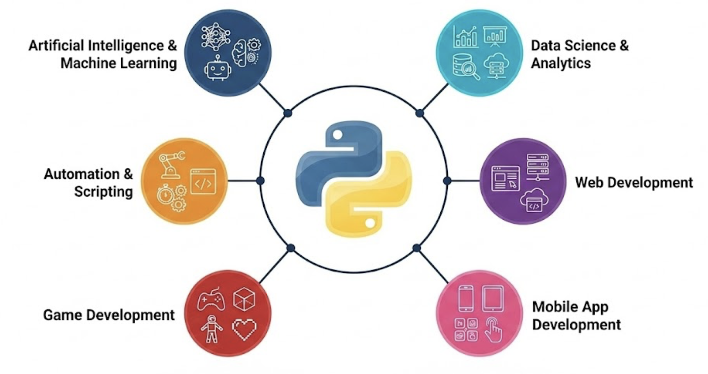
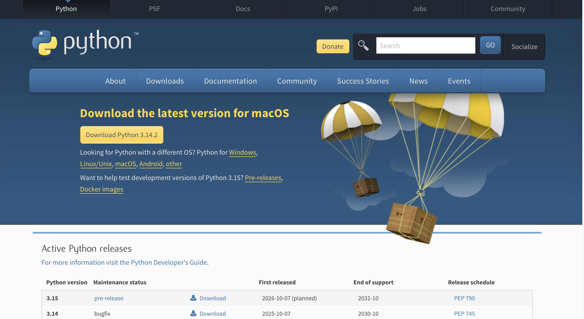

Python Fundamentals
AI Bootcamp
Mork Mongkul
Introduction
About This Course
Welcome to Python Fundamentals!
This course will teach you:
- Python environment & basics
- Control flow & logic
- Core data structures
- Functions
- String handling
- Python Standard Library

Outline
- Python environment & basics
- Control flow & logic
- Core data structures
- Functions
- String handling
- Python Standard Library
1. Python Environment & Basics
What is Python Used For?
- Artificial Intelligence & Machine Learning
- Data Science & Analytics
- Automation & Scripting
- Web Development
- Game Development
- Mobile App Development

Python Versions
Python 2.x (Legacy)
- Released in 2000
- End of life: January 2020
- No longer supported
Python 3.x (Current)
- Released in 2008
- Current: Python 3.12+
- Active development
- Modern features
Installing Python
Windows
- Visit python.org/downloads
- Download latest Python 3.x
- Run installer
- Check “Add Python to PATH”
- Click “Install Now”

Installing Python (cont.)
macOS
- Visit python.org/downloads
- Download for macOS
- Run .pkg installer
- Follow installation wizard
Setting Up Jupyter Notebook
Installation
Running Jupyter Notebook
Note
This will open a browser window with the Jupyter interface
Google Colab (Alternative)
Free cloud-based Jupyter notebooks
Advantages:
No installation needed
Free GPU access
Easy sharing
Google Drive integration
Pre-installed packages
Getting Started:
Sign in with Google account
Click “New Notebook”
Start coding!
Tip
Great for learning and collaboration without setup!
Setting Up VS Code
Installation
- Download from code.visualstudio.com
- Install for your OS
- Launch VS Code
Install Python Extension
- Click Extensions icon (left sidebar)
- Search for “Python”
- Install “Python” by Microsoft
- Install “Jupyter” by Microsoft (optional)
Python Virtual Environment
What is a Virtual Environment?
A virtual environment is an isolated Python environment that allows you to:
- Install packages without affecting system Python
- Manage different project dependencies separately
- Avoid version conflicts between projects
- Create reproducible development environments
Important
Best Practice: Always use a virtual environment for your projects!
Creating Virtual Environments
Using venv (Built-in)
Create a virtual environment:
This creates a folder called myenv containing the virtual environment.
Activating Virtual Environments
Windows
macOS / Linux
Tip
When activated, you’ll see (myenv) in your terminal prompt
Working with Virtual Environments
Installing Packages
Deactivating
Variables & Data Types
Variables
Python Variable is the container for storing value(string, int, float, boolean), and we don’t need to declare variable before using them,or declare their type. Every variable in python is an object.
Tip
Variable names should be descriptive and use snake_case
Data Types
| Type | Description | Example |
|---|---|---|
int |
Integer numbers | 42, -10, 0 |
float |
Decimal numbers | 3.14, -0.5 |
str |
Text/strings | "Hello", 'Python' |
bool |
True/False | True, False |
Declaring Variables & Checking Types
# Declare variables of different types
age = 25 # int
price = 19.99 # float
name = "Makara" # str
is_active = True # bool
# Check variable types using type()
print(type(age)) # <class 'int'>
print(type(price)) # <class 'float'>
print(type(name)) # <class 'str'>
print(type(is_active)) # <class 'bool'>Basic Operators
Python operators are special symbols or keywords,they are used to perform operations on value and variables.
The Primary Python Operators are:
Arithmetic Operators
Comparision Operators
Logical Operators
Arithmetic Operators
| Operator | Name | Description |
|---|---|---|
+ |
Addition | Adds two operands |
- |
Subtraction | Subtracts right operand from left |
* |
Multiplication | Multiplies two operands |
/ |
Division | Divides left by right (returns float) |
// |
Floor Division | Division discarding remainder |
% |
Modulus | Returns remainder of division |
** |
Exponentiation | Raises first to power of second |
Example:
Comparison Operators
Compare two values and return True or False.
| Operator | Meaning |
|---|---|
== |
Equal to |
!= |
Not equal to |
> |
Greater than |
< |
Less than |
>= |
Greater than or equal |
<= |
Less than or equal |
Example:
Logical Operators
Combine multiple conditions together.
| Operator | Description |
|---|---|
and |
Returns True if both conditions are true |
or |
Returns True if at least one condition is true |
not |
Reverses the result (True becomes False) |
Example:
2. Control Flow & Logic
Conditional Statements (If/Elif/Else)
Conditional statements in Python are used to execute certain blocks of code based on specific conditions.

Loop(repeat)
What is Loop?
Looping means repeating something over and over until a particular condition is satisfied.
A for loop is a control flow statement that is used to repeatedly execute a group of statements as long as the condition is satisfied.
A while loop is used to execute a block of statements repeatedly until a given condition is satisfied.
Such a type of statement is also known as an iterative statement.
for loop
A for loop is used for iterating over a sequence (such as a list, tuple, string, or range). It executes a block of code once for each item in the sequence.
1. Iterate over a list
2. Iterate over a string
3. Using range()
For Loop: Examples(cont)
7. Iterate over dictionary
For Loop: Control Statements
break - Exit loop early
continue - Skip current iteration
While Loops
Repeat code while a condition is true - useful when you don’t know how many iterations you need.
When to use:
- Unknown number of iterations
- Wait for user input
- Repeat until condition met
- Game loops
Warning
Beware: Infinite loops if condition never becomes false!
3. Core Data Structures {background-color=” #1e295e”}
Lists
Lists are ordered, mutable collections that can store multiple items of any type.
They’re one of the most versatile data structures in Python.
Ordered, mutable collection - store multiple items in a single variable.
Key Features:
- Ordered: Items have defined order
- Mutable: Can be changed
- Allow duplicates: Same value multiple times
- Mixed types: Different data types together
Tip
Use []or list() constructor to create lists!
List Methods
Common operations to manipulate lists:
| Method | Purpose |
|---|---|
append() |
Add to end |
insert() |
Add at position |
extend() |
Add multiple |
remove() |
Delete by value |
pop() |
Remove & return |
sort() |
Sort list |
reverse() |
Reverse order |
fruits = ["apple", "banana"]
# Adding items
fruits.append("orange") # Add to end
fruits.insert(1, "mango") # Insert at index
fruits.extend(["grape", "kiwi"]) # Add multiple
# Removing items
fruits.remove("banana") # Remove by value
popped = fruits.pop() # Remove & return last
del fruits[0] # Delete by index
# Other methods
fruits.sort() # Sort in place
len(fruits) # LengthTuples - Immutable Sequences
Tuples are ordered collections similar to lists, but they cannot be modified after creation.
Use tuples when you want to ensure data remains unchanged, such as coordinates or database records.
Ordered, immutable collection - cannot be changed after creation.
Important
Tuples cannot be modified after creation
Tip
Use () or turple() constructor to create turple!
Dictionaries - Key-Value Pairs
Dictionaries store data as key-value pairs, allowing fast lookups by key.
They’re perfect for representing structured data like user profiles, configurations, or database records.
# Creating dictionaries
student = {
"name": "Alice",
"age": 20,
"grade": "A"
}
# Accessing values
student["name"] # "Alice"
student.get("age") # 20
# Adding/updating
student["email"] = "alice@example.com"
student["age"] = 21
# Methods
student.keys() # dict_keys(['name', 'age', 'grade'])
student.values() # dict_values(['Alice', 21, 'A'])
student.items() # Key-value pairsImportant
Dictionary are mutable and iterable.
Tip
Use {} or dict() constructor to create dictionary!
Sets - Unique Collections
Sets is an unordered collection of unique elements; can be changed, but elements themselves must be immutable.
They’re ideal for membership testing, removing duplicates, and mathematical set operations.
Important
Set are mutable and iterable.
Tip
Use {} or set() constructor to create set!
Summary Python Data Structure
| Data Structure | Mutable | Iterable | Explanation |
|---|---|---|---|
| List | Yes | Yes | Ordered, can be modified |
| Tuple | No | Yes | Ordered, cannot be modified |
| Dictionary | Yes | Yes | Key-value pairs for fast lookups |
| Set | Yes | Yes | Unordered, unique items only |
4. Functions
Function
Defining Functions
A function is a block of instructions that performs an action and, once defined, can be reused. Functions make code more modular, allowing you to use the same code over and over again.
A function is defined by using the def keyword, followed by a name of your choosing, followed by a set of parentheses which hold any parameters the function will take (they can be empty), and ending with a colon.

Example:
Tip
Function in python defined by using keyword def, and to call a function, you must specify the name of function follow by parentheses ().
Function
Parameters & Return Values
- Parameters allow you to pass data into functions
- return values send data back to the caller.
Think of parameters as inputs and return values as outputs.
Example
Function
Default Parameters
Default parameters provide fallback values when arguments aren’t supplied.
Default parameters makes functions more flexible and reduces the need for multiple similar functions.
Example
Function
Scope - Local vs Global
Scope determines where variables can be accessed in the block of code.
- Local variables exist only inside functions.
- global variables are accessible everywhere.
Example
Function
Lambda Functions
Lambda functions are small, anonymous functions defined in a single line.
Lamda function used for simple operations, especially with functions like map(), filter(), and sorted().
Example
5. String Handling
Data Type: Strings
String is a collection of alphabets, words or other characters.
- One of the primitive data structures and building blocks for data manipulation
- Python has a built-in string class named
str - Strings are immutable - cannot be changed after creation
String Indexing
Strings can be indexed using positive (from start) or negative (from end) indices:

String Methods
String methods are built-in functions that help us to manipulate and transform text data.
| Method | Purpose |
|---|---|
upper() / lower() |
Change letter case |
title() |
Capitalize each word |
strip() / rstrip() / lstrip() |
Remove whitespace |
replace(old, new) |
Swap substrings |
split(delimiter) |
Break string into list |
join(iterable) |
Combine list into string |
startswith() / endswith() |
Check prefixes/suffixes |
isdigit() / isalpha() |
Validate characters |
Example
text = " Hello, World! "
# Case methods
text.upper() # " HELLO, WORLD! "
text.lower() # " hello, world! "
text.title() # " Hello, World! "
# Cleaning
text.strip() # "Hello, World!"
text.replace("World", "Python") # "Hello, Python!"
# Checking
text.startswith("Hello") # True
text.isdigit() # False
"123".isdigit() # TrueF-Strings (Formatting)
F-strings (formatted string literals) start with the letter f and let you embed expressions inside curly braces {} directly within a string.
f-string read variables inline without concatenation and automatically convert results to text, making string formatting both faster and easier to read.
Example
6. Python Standard Library
math Module
The math module are use when you need high-precision constants and functions that go beyond Python’s built-in arithmetic. It centralizes trigonometry, exponentiation, rounding, and logarithmic helpers so you do not have to implement them yourself.
| Function/Constant | Description |
|---|---|
math.pi, math.e |
Mathematical constants used in trigonometry and natural logs |
math.sqrt(x) |
Square root using floating point precision |
math.pow(x, y) |
Raises x to the power y (always returns float) |
math.ceil(x) / math.floor(x) |
Round a number up or down to the nearest integer |
math.sin(x), math.cos(x) |
Trigonometric helpers that expect radians |
Example:
random Module
The random module is ideal for simulations, sampling, and any feature that needs non-deterministic behavior. Most functions let you control the type of randomness you receive (integers, floats, sequences) so you can shape the output to your problem.
| Function | Description |
|---|---|
random.randint(a, b) |
Inclusive integer between a and b |
random.random() |
Float in the half-open range [0.0, 1.0) |
random.uniform(a, b) |
Float within your own numeric bounds |
random.choice(seq) |
Picks one element from a sequence |
random.shuffle(seq) |
Shuffles a list in-place |
random.sample(seq, k) |
Returns k unique items without replacement |
Example:
import random
# Random integer
random.randint(1, 10) # Random int between 1-10
# Random float
random.random() # Random float 0.0-1.0
random.uniform(1.0, 10.0) # Random float 1.0-10.0
# Random choice
colors = ['red', 'blue', 'green']
random.choice(colors) # Pick random item
# Shuffle list
random.shuffle(colors) # Shuffles in place
# Random sample
random.sample(colors, 2) # Pick 2 random itemsdatetime Module
datetime gives you industrial-strength date and time handling, including timezone-aware objects, formatting helpers, and arithmetic via timedelta. Use it for scheduling, logs, and any workflow that cares about calendar accuracy.
| Class/Function | Description |
|---|---|
datetime.now() |
Current local timestamp with date and time |
date.today() |
Current calendar date (no time attached) |
datetime(year, month, day, ...) |
Construct specific timestamps |
datetime.strftime(fmt) |
Format a date/time into human-readable text |
datetime.strptime(text, fmt) |
Parse formatted text back into a datetime |
timedelta(days=…, seconds=…) |
Represents time differences for arithmetic |
Example:
from datetime import datetime, date, time
# Current date and time
now = datetime.now()
print(now) # 2025-12-19 10:30:45
# Date only
today = date.today()
print(today) # 2025-12-19
# Create specific datetime
birthday = datetime(1990, 5, 15)
# Formatting
now.strftime("%Y-%m-%d") # "2025-12-19"
now.strftime("%d/%m/%Y %H:%M") # "19/12/2025 10:30"
# Date arithmetic
from datetime import timedelta
tomorrow = today + timedelta(days=1)os and sys Modules
os exposes operating system features (files, directories, environment variables), while sys surfaces information about the Python interpreter itself. Together they let scripts adapt to their execution environment.
| API | Description |
|---|---|
os.getcwd() |
Returns the current working directory |
os.listdir(path) |
Lists files and folders in a directory |
os.path.exists(path) |
Checks whether a path exists |
os.rename(src, dst) |
Renames or moves a file |
sys.version |
Full Python version string |
sys.platform |
Identifier for the underlying OS |
sys.argv |
Command-line arguments list |
sys.exit(code) |
Immediately terminates the program |
Example:
import os
import sys
# Operating system interface
os.getcwd() # Current directory
os.listdir('.') # List files
os.path.exists('file.txt') # Check if exists
os.rename('old.txt', 'new.txt') # Rename file
# System specific
sys.version # Python version
sys.platform # Platform name
sys.argv # Command line arguments
sys.exit() # Exit programImport System
Python’s import mechanism lets you split logic across files and reuse third-party packages. Choose the import style that communicates the dependency scope you actually need.
| Pattern | When to use |
|---|---|
import module |
You need many attributes and want to keep namespaced access |
from module import name |
You only need a few members and prefer direct names |
import module as alias |
Long module names or convention (import numpy as np) |
from module import * |
Quick experimentation; avoid in production due to namespace collisions |
from package import submodule |
Access a specific component inside a package |
from . import helper |
Relative imports within your own package structure |
Example:
Questions?
Instinct Institute
Mork Mongkul
Python Fundamentals | AI Bootcamp